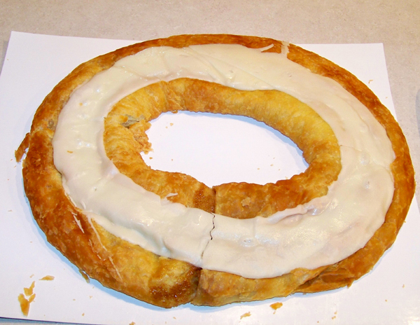

Recipe by Shauna Sever from https://cooking.nytimes.com/recipes/1020730-kringle

1. Prepare the dough: In the bowl of a food processor, combine all-purpose flour, bread flour, sugar, yeast and salt. Pulse a few times to blend. Add butter and pulse 10 times, or until butter chunks are broken down by about half.
2. In a medium bowl, whisk together milk and egg. Scrape flour mixture into the bowl and use a flexible spatula to stir together until nearly all the flour is moistened. Use your hand to quickly knead the dough to bring it together. Transfer dough to a work surface, pat into a rectangle, and wrap with plastic wrap. Refrigerate for at least 4 hours and up to 2 days.
3. On a lightly floured surface, roll chilled dough into a roughly 8-by-15-inch rectangle. Fold the two short sides of the rectangle toward the center, folding the rectangle into thirds, like a letter. Rotate dough 90 degrees, then roll out again into a 8-by-15-inch rectangle; fold into thirds again. Wrap dough in plastic wrap and chill for at least 20 minutes.
4. Roll the dough out into a roughly 8-by-15-inch rectangle, fold into thirds, wrap in plastic wrap and chill for at least 20 minutes two more times. At this point, wrapped dough can be kept in the refrigerator up to 3 days, or freezer for 2 months.
5. Prepare the filling: In the bowl of an electric mixer, combine almond paste, butter, confectioners’ sugar, 2 tablespoons of the egg whites and the salt. Beat to combine, then beat in lemon juice, adding more to taste, if you like.
6. Line two rimmed sheet pans with parchment paper. Unwrap the dough and cut in half.
7. On a lightly floured work surface, roll each half into a 6-by-24-inch rectangle. Spread 1/2-cup filling on each in an even strip down the center (about 2 1/2-inches wide).
8. Fold one long side over the filling, leaving the remaining third of the dough exposed. Use a pastry brush to the open border of dough with reserved egg whites on both the long side and two short ends. Fold the second long side over the first; pinch and press the seam tightly along the length and at both short ends, sinking your fingertips into the pastry to create a tight seal.
9. Remeasure dough to make sure it’s at least 24 inches long; if necessary, stretch it back out. Form into an oval, then tuck one end into the other. Pinch and press the seam together, then transfer oval to prepared sheet pans and flip over so it’s seam-side down. Repeat with the remaining dough and filling. Cover loosely with plastic wrap and let rise in a warm spot for 30 to 45 minutes, or until slightly puffy.
10. When ready to bake, heat oven to 375 degrees. Brush pastry with more egg white, then bake until golden, about 25 minutes, rotating sheet pans from front to back and top to bottom halfway through.
11. As soon as the pastries come out of the oven (and the pastries are piping hot!), do something that seems a little crazy: Compress each pastry slightly by using the sheet pan with the other pastry on it, setting the sheet pan on top of the pastry and pressing gently to eliminate the air pocket between the pastry and filling. Transfer the sheet pans to wire racks and allow pastries to cool completely.
12. Prepare the icing: In a small bowl, whisk together confectioners’ sugar, vanilla, fine sea salt and 4 teaspoons water. Spread icing over tops of the kringles. Let icing dry before slicing and serving.